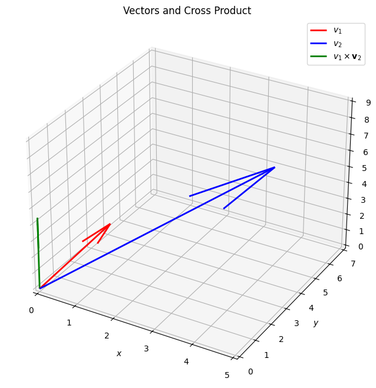

Vector Products#
Dot Product#
\(\hat{a}.\hat{b}\)
Note
This tells how much do these point in same direction.
How to calculate dot product#
\(a = \begin{bmatrix} a_1 & a_2 & a_3 \end{bmatrix}\) \(b = \begin{bmatrix} b_1 & b_2 & b_3 \end{bmatrix}\)
\(\hat{a}.\hat{b} = a_1b_1 + a_2b_2 + a_3b_3\)
Cauchy-Schwarz Inequality#
\(|\hat{a}.\hat{b}| \: \le ||a||b||\)
Note
Equality holds when a is a scalar multiple of b.
Angle between vectors#
\(\hat{a}.\hat{b} = \|a\| \|b\|\cos\theta\)
Note
When dot product is 0, the vectors are orthogonal vectors.
Cross Product#
\(\hat{a} \mathbb{X} \hat{b}\) - Vector which is orthogonal to both a and b
Note
This tells how much do these point in opposite direction.
Angle between vectors#
\(\hat{a} \mathbb{X} \hat{b} = \|a\| \|b\|\sin\theta\)
